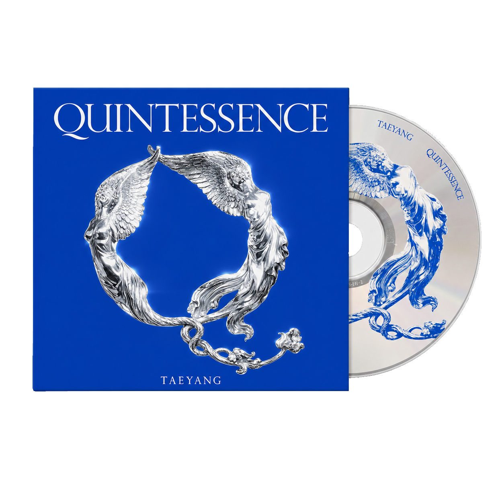
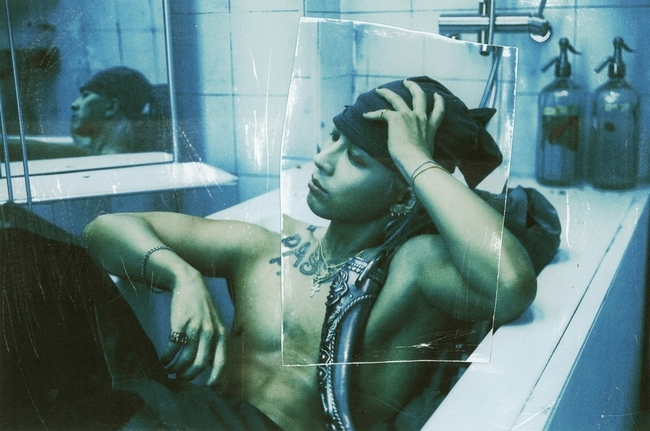

TAEYANG
'QUINTESSENCE'
> ‘QUINTESSENCE’는 본질에 대한 태양의 오랜 고민에서 출발한 앨범이다.
보이지 않지만 가장 중요한 가치를 찾아가는 그 여정을 음악으로 구현해 냈다.

이번 앨범에서 태양은 섣불리 정답을 정의하기보다, 찾아가는 과정에서
마주한 스스로의 물음과 감정, 그리고 그에 임하는 본인의 태도에 집중했다.
아티스트 개인의 서사로 시작된 이 질문들이 음악을 통해,
청자 각자의 내면에 자리한 본질적인 무언가를 건드리는 울림으로 확장되길 기대한다.
